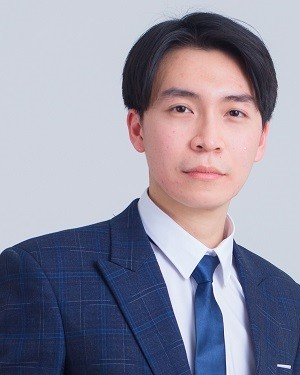

Nhat-Minh Le-Phan

PhD Student, School of Electrical and Electronic Engineering
Nanyang Technological University, Singapore
Advisor: Prof. Lihua Xie
Junior Lecturer, Department of Automation Engineering
Hanoi University of Science and Technology, Hanoi, Vietnam
Links: Google Scholar, LinkedIn, GitHub, Email
About me
I am a PhD student in Automatic Control at Nanyang Technological University, Singapore, supervised by Prof. Lihua Xie since August 2025. I received my B.Sc. (2022) and M.Sc. (2024) in Control and Automation Engineering from Hanoi University of Science and Technology, graduating as valedictorian of both programs (B.Sc. rank: 1/496). I have also been a faculty member (Junior Lecturer) of the Department of Automation Engineering at Hanoi University of Science and Technology since August 2024, where I am a member of the Multi-Agent Control Systems Laboratory. Before that, I spent two years (2022–2024) as a Guidance and Control Engineer at Viettel Aerospace Institute (VTX), designing nonlinear, robust, adaptive and learning-based controllers and guidance algorithms for flight vehicles.
My research interests include multi-agent control, resilient control, nonlinear and intelligent control, and missile guidance and control.
Timeline
- 2025 Aug – present: PhD Student in Automatic Control, School of Electrical and Electronic Engineering, Nanyang Technological University, Singapore
- 2024 Aug – present: Faculty member (Junior Lecturer), Department of Automation Engineering, Hanoi University of Science and Technology
- 2022 Jul – 2024 Aug: Guidance and Control Engineer, Viettel Aerospace Institute (VTX), Hanoi
- 2022 Jul – 2024 Oct: M.Sc. in Control and Automation Engineering, HUST. Valedictorian
- 2017 Aug – 2022 May: B.Sc. in Control and Automation Engineering, HUST. Valedictorian, rank 1/496
Selected publications
News
- 2026 Oct: New preprint Resilient Angle-Constrained Formation Control and Localization Under DoS Attacks (Extended Version) on arXiv
- 2026: Complete Controllability of Matrix-Weighted Leader–Follower Networks at the 65th IEEE Conference on Decision and Control (CDC)
- 2026: Angle-Based Formation Tracking of Underactuated Planar Agents, oral presentation at the 19th ICARCV, Halong Bay, Vietnam
- 2026: Super-Twisting Sliding Mode Disturbance Observer-Based Neural-Network Controller for Motor Drives at ICEMS 2026
- 2026: Resilient Tracking of Bearing-Constrained Leader–Follower Formations Under Denial-of-Service Attacks appears in IEEE Transactions on Control of Network Systems
- 2025 Aug: Started my PhD at NTU, Singapore, with the NTU PhD Research Scholarship, under the supervision of Prof. Lihua Xie
- 2025: Bearing-Only Solution for Fermat–Weber Location Problem: Generalized Algorithms appears in Automatica
- 2025 Jun: Research talk show (in Vietnamese) on master's study in Control and Automation Engineering at HUST, see Talks
- 2025 Apr: Research talk show (in Vietnamese) on control of multi-agent systems, see Talks
- 2024 Oct: Received my M.Sc. in Control and Automation Engineering from HUST as valedictorian
- 2024 Aug: Became a faculty member (Junior Lecturer) of the Department of Automation Engineering, HUST
- 2024: Two papers on matrix-weighted and matrix-scaled consensus appear in IEEE Transactions on Network Science and Engineering